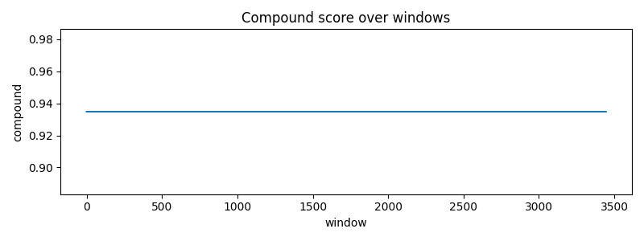

Windows: 3446

python -m tools.eval_harness.cli backtest --data data/historial_kabala_github_fixed.csv --models consensus,transformer_deep,lstm_v2,genetico,montecarlo,apriori --windows rolling_200 --top_n 10 --seed 42 --out results/accuracy_analysis/run_test/run_20250807_181903
{
"data": "data/historial_kabala_github_fixed.csv",
"models": "consensus,transformer_deep,lstm_v2,genetico,montecarlo,apriori",
"windows": "rolling_200",
"top_n": 10,
"seed": 42,
"out": "results/accuracy_analysis/run_test/run_20250807_181903"
}